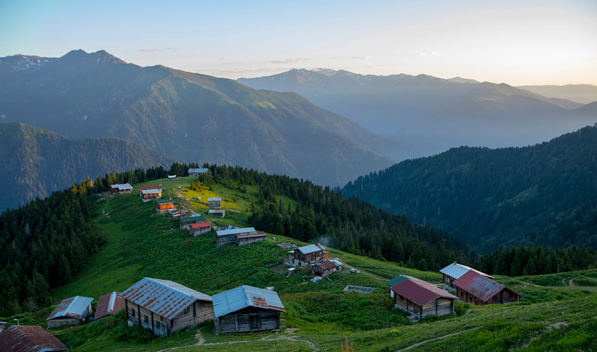

Karadeniz Gezisi
Fiyat: 130 Tl
Kalkış Adresi: Gazi Caddesi
Kalkış Tarih ve Saat: 08.07.2022 - 21:15
3 Gün
Tur Programı
- Gün - Gece Yolculuğu
Belirtilen noktalardan hareket ile yolculuğumuz başlıyor.
- Gün - Samsun - Atatürk Heykeli - Bandırma Vapuru - Ünye - Fatsa - Ordu - Giresun - Giresun Kalesi
Samsun’a doğru yol alıyoruz. İlk olarak Samsun Meydanı’nda bulunan ATATÜRK Heykelini görüyoruz. Sonrasında doğu park alanı içinde yer alan ATAMIZI Samsun’a ulaştıran aslına uygun olarak yapılan Bandırma Vapurunu gördükten sonra panoramik olarak Ordu’ya varıyoruz. Ordu'da vereceğimiz serbest zamanda dileyen misafirleirimiz teleferik ile Boztepe'ye çıkabilirler.(Ekstra) Serbest zaman sonrasında Ordu'dan ayrılarak Giresun’a ulaşıyoruz. Giresun’dan geçerken bir yanımızda yakın tarihimizin bir parçası, milli mücadelenin önemli isimlerinden Topal Osman’ın Mezarının da içinde bulunduğu Giresun Kalesi (Panoramik), diğer tarafımızda ise Karadeniz’in tek adası olan Giresun Adasını (Panoramik) görerek otelimize doğru hareket ediyoruz. Otelimize ulaşıyoruz. Akşam yemeği ve konaklama otelimizde.
- Gün - Trabzon - Ayasofya Müzesi - Sümela Manastırı - Çay Fabrikası - Sürmene - Rize Bezi - Batum Turu
Turumuz, sabah otelimizde alacağımız açık büfe kahvaltı sonrasında başlıyor. Trabzon Maçka’da bulunan Altındere Milli Parkına hareket ediyoruz. Yeşilliklerin içinde bulunan Karadağ’ın eteklerinde kayaya oyularak inşa edilmiş olan Sümela Manastırının mimari harikasını gördüğünüzde, şaşkınlığınızı gizleyemeyeceksiniz. 1250 mt yükseklikte bulunan Sümela Manastırını gezerken rehberimizin anlatımlarından sonra bir kez daha büyüleneceksiniz. Ayazma, Kaya Kiliseleri, Su Kemerleri, Kaya Freskleri (Sümela Manastırı'nda yapılan restorasyon çalışmaları nedeniyle manastır, 22 Eylül 2015 tarihinden itibaren geçici süreyle ziyarete kapatılmıştır. Restorasyon süresi belli olmadığından, tur tarihinde manastırın kapalı olması durumunda Sümela Manastırı’nın Altındere Milli Parkı içerisinden panoramik fotoğrafı alınacaktır.) gördükten sonra Karadeniz’in en gelişmiş kenti olan Trabzon’a varıyoruz. 13.yy da I. Manuel Komnenos zamanında yapılmış, 1572 tarihinde camiye çevrilen, ardından 1964 tarihinde müzeye çevrilmiş olan Kommenos Devletinin önemli eserlerinden biri olan Ayasofya Müzesini geziyoruz. Ardından öğle yemeğimizi alıyoruz. Yemek sonrasında Trabzon’a has olan Telkâri Sanatının örneklerini görebileceğimiz ve satın alabileceğimiz telkâri atölyesi ve mağazası gezintinin ardından Soğuksu Mevkiine doğru yola çıkıyoruz. Burada bizi bir 20.yy şaheseri olan Atatürk Köşkü(Restorasyon nedeni ile kapalı değil ise) karşılıyor. Ulu Önder, bu köşkü 1924 ve 1930 yıllarında ziyaret etmiş ve 1937 yılında bir kez kalmış, vasiyetinin bir kısmını da bu köşkte yazmıştır. Köşk’ün mimarisi ve bahçesi sizleri büyüleyecek cinsten. Atatürk Köşkü gezimizin ardından, Sürmene’de bulunan Çay Fabrikamıza gidiyoruz. Çayın dalından koparılıp bardaklarımıza gelişine dek izlediği süreci yerinde öğreniyoruz. Alacağımız bilgiler sonrasında dileyenler hediyelik çay alışverişini bu noktadan yapabilirler. Çay fabrikası ziyaretimiz sonrasında ise yine Sürmene denince ilk akla gelen unsurlardan olan Sürmene Bıçağı Atölyesine gidiyoruz. Sürmene Bıçağı hakkında da bilgilendikten ve alışverişimizi yaptıktan sonra, Rize şehrimizi panaromik görerek Rize Bezinin tanıtılacağı ve alışverişinin yapılacağı atölyemize varıyoruz. Gezilerinin ardından otelimize ulaşıyoruz. Akşam yemeği ve konaklama otelimizde. Akşam yemeğimizi aldıktan sonra isteyen misafirlerimiz ile Batum'a hareket ediyoruz (Ekstra). Sarp Sınır Kapısında giriş işlemlerimizi tamamladıktan sonra Gürcistan / Acara bölgesine geçiyoruz. Hz. İsa’nın On İki Havarisinden biri olan St. Mathias`in mezarının da bulunduğu Roma döneminden kalan ve en son Osmanlılar döneminde kullanılan Gonio (Apsaros Kalesi'ni) (Panoramik) görüyoruz. Batum şehir merkezine doğru devam ederken Bayburt'tan doğup Batum sınırlarına kadar kendine keskin çizgiler oluşturan Çoruh Nehri'ni ve üzerindeki eski Gonio Köprüsü'nü görüyoruz. Batum kent merkezini gezmeye başlıyoruz. Burada; Tarihi Meryem Ana Katedral Kilisesi'ni (Panoramik), Tarihi Orta Camii, Tiyatro Binasını, Medea Heykeli'ni, Batum Limanı'nı ve yeni oluşturulan yüzüyle Avrupa Meydanı’nı görüyoruz. Batum Bulvarı'nda gezinti yaptıktan sonra alışveriş için serbest zaman veriyoruz. Türkiye’ye girerken DutyFree’den alışveriş yapma imkânı bulacaksınız. Türkiye’ye giriş yaptıktan sonra otelimize geçiyoruz.